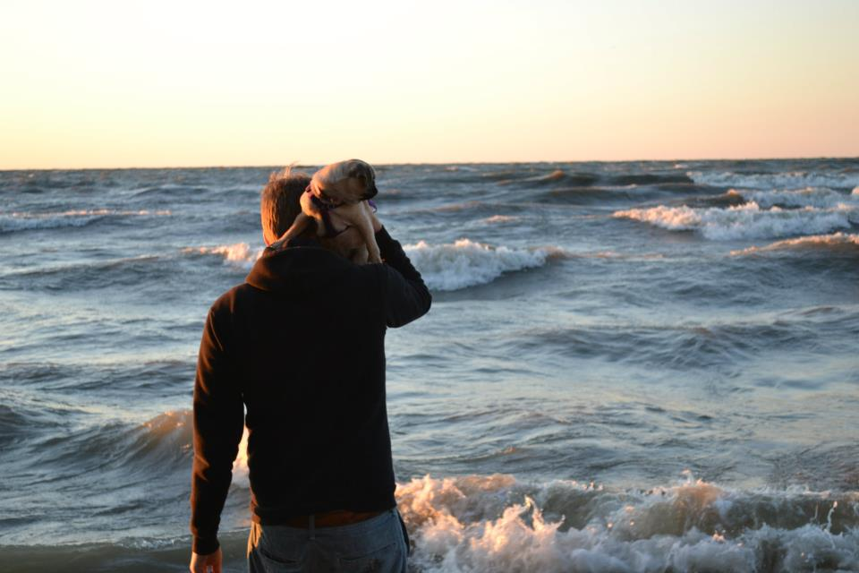
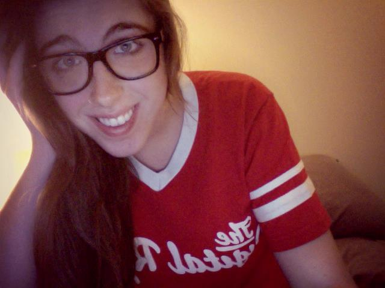
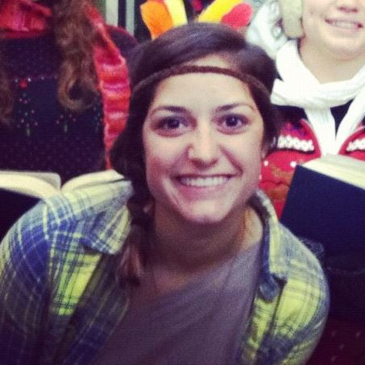
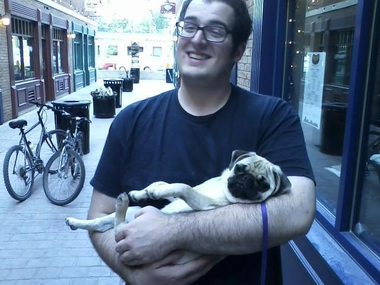
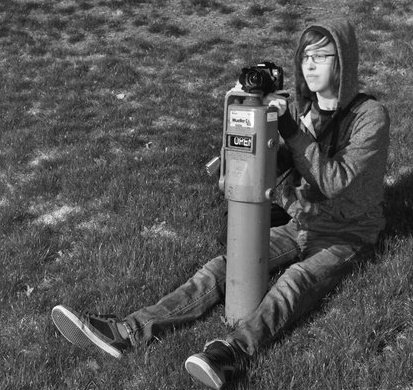

Erik Shear
General Manager

Erik Shear, Senior Electronic Media Production Major, is Black Squirrel Radio's General Manager. He has been with BSR going on 4 years now, and has held positions as a station DJ, Music Director, and Programming Director. A native of Westlake, Ohio, Erik loves to jam out to the best metal and rock there is. Erik is also a father of a pug named Apple Mae, whom is very close with. Erik also has a love for basketball, and considers himself the second coming of Larry Bird, but with a slightly better jump shot. Erik is also very fond of his GF.
Rachel Campbell
Program Director

Hello lovely person reading this! My name is Rachel and I'm the program director. I keep the DJs in line, act as a mentor and help everything regarding our shows run as smoothly as possible. This is my fifth semester at BSR and I have been loving every second of it. Outside of the station, I'm a junior magazine journalism major and photojournalism minor. If it's not already obvious, I love writing, taking pictures and music. I also dig movies, especially of the horror genre, and I'm a gum addict that functions mainly on coffee, pizza and Chipotle. I spend most of my free time going to concerts and searching out new unsigned and undiscovered bands for personal enjoyment as well as new material to play on my show Finders Keepers, which airs Fridays from 4 – 6 p.m. Keep up with me there or on twitter as I shamelessly plug it right now: @rachelcmpbll :)
Stove
Operations Director
Born to be all about music in evey shape or form. Big stove maors in Communication Studies and he is a Senior. He plans on becoming a radio dj after graduation. Big stove also has started his own record label called " Chef Beats Productions".Began working with black squirrel radio 4yrs ago with his radio show called "The Cypher" and now has the show " The Battle of the Ages", his sophomore year was the start. Stove has won awards like bet dj voice from bsr two semesters straight, best college radio show nominee from ohio hip hop awards. Stove is also a mobile dj and has done a lot of events on and off campus. Now holding the position of Operations Director, he will become a great asset to black squirrel radio
Gina LaRocca
Music Director

Hello! Hello! Hello! I’m Gina, your crazy-doesn’t-sleep-or-eat music director. If you ever have any fantastic ideas for spreading the word about BSR, I’m your girl. I am a Visual Communication Design major and Advertising minor. I love drinking tea, camping, traveling, helping people and making people smile. I do not enjoy watching movies -- ever. I drink lots of coffee and eat lots of carrots. My favorite t-shirt is from Goodwill and one time I was stung by a bee. Stop by BSR anytime. I’m almost always there
Brenda Riepenhoff
Production Director
Hello everybody! My name is Brenda Riepenhoff and I am BSR's production director! I get to record all the fun promotional stuff you hear on the station, like commercials, show promos, station IDs, etc. I learn so much everyday and am so glad to have this opportunity! My radio show is BSR on BSR (Wednesday 2-4pm), where I play any and every kind of music you could imagine! Some of my current favorite artists are The Fray, Billy Joel, Meiko, Peter Paul and Mary, Ingrid Michaelson, and just about 4 billion others. I love discovering new artists, as well as learning about artists from the past. I also love NASCAR, zoos, yodelers, and dancing.
Robbie Puzzitiello
Content Director

Hey all, I'm Robbie, the content director, and it's my job to entertain you. Music, movies, and writing have always been what I flocked to when I was bored, and fortunately BSR offers a medium through which I can extend those interests to you, the listener. It's been a rewarding experience being able to set up interviews with amazing people to bring them closer to our audience, and we aim to keep providing these opportunities. On a side note, I dig giant robots, comic books, and Coheed & Cambira... It's super awesome!
Bryan Haag
Website Director

Hey folks, I'm Bryan and I'm Black Squirrel Radio's website director. It's my job to keep our site organized and updated. Catch my show, Roll For Initiative, on Thursdays from10-12 am, where I talk opinion on videogames, tabletop and general nerd stuff. Outside of BSR, I am currently a senior Information Design major. Most of my downtime is spent playing video games, teaching myself guitar, and listening to a little bit of everything